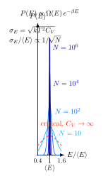

涨落为什么按 $1/\sqrt N$ 缩小?
上一节我们把理想气体的配分函数写完, 算出了 $U = \tfrac{3}{2}N k T$ 这样的"宏观定律". 但这里面藏了一个我们一直在回避的问题: 配分函数其实是一个概率权重 $e^{-\beta E}$ 的求和, 它给出的不是 $U$ 这个确定的数, 而是一个分布 $P(E)$. 既然有分布, 就应该有涨落. 那我们为什么从不在实验室里看到一杯水的温度突然跳一下? 秤上的 1 kg 砝码为什么看起来就是 1 kg, 不是 $1.000000\ldots\pm 10^{-12}$ kg?
这不是因为微观层面真的确定 —— 恰恰相反, 每个分子都在疯狂涨落. 真正的原因更微妙, 也更深刻: 当 $N \sim 10^{23}$ 时, 涨落以 $1/\sqrt N$ 的速度被"抹平". 这件事几乎是整个统计力学的地基; 没有它, 熵就没有意义, 温度就不是一个明确的物理量, 热力学极限也无法定义. 这一节我们来认真讲清楚它为什么必然如此.
一、宏观确定性作为一个需要解释的现象
先把问题摆清楚. 考虑一个体积 $V$、温度 $T$、粒子数 $N$ 的系统, 与一个大热库接触. 按正则系综, 微观态 $s$ 出现的概率是 $p_s = e^{-\beta E_s}/Z$, 其中 $Z = \sum_s e^{-\beta E_s}$ 是配分函数, $\beta = 1/kT$. 能量的期望和平方期望分别是:
$$\langle E\rangle = \sum_s E_s p_s,\qquad \langle E^2\rangle = \sum_s E_s^2 p_s.$$
方差 $\langle (\Delta E)^2\rangle \equiv \langle E^2\rangle - \langle E\rangle^2$ 衡量能量偏离平均值的"宽度". 对 1 mol 气体来说, $\langle E\rangle \sim N k T$ 的量级, 那 $\sqrt{\langle (\Delta E)^2\rangle}$ 究竟有多大? 是 0.1 倍的 $\langle E\rangle$? 还是 $10^{-10}$ 倍? 这个比值决定了我们能不能把 $U$ 当成一个确定的物理量来用.
更本质地说, 整个热力学都建立在"极限态函数"这个概念上: 熵 $S$、内能 $U$、自由能 $F$ 应该是系统状态的函数, 而不是它们期望值外面再挂一个扰动项. 这要求在 $N\to\infty$ 的某种意义下, 分布 $P(E)$ 退化到一个 $\delta$ 函数. 要看清这件事为什么会发生, 我们必须把 $\langle(\Delta E)^2\rangle$ 用热力学量表达出来 —— 这是本节的第一个关键步骤.
二、Deepdive: 严格推出 $\langle(\Delta E)^2\rangle = kT^2 C_V$
这条公式几乎出现在每本统计力学教材里, 但推导往往被压成一行"容易验证". 我们来严肃做一次. 出发点是配分函数 $Z(\beta) = \sum_s e^{-\beta E_s}$, 视作 $\beta$ 的光滑函数.
第一步: $\langle E\rangle$ 作为 $\ln Z$ 的导数. 对 $\beta$ 求导:
$$\frac{\partial Z}{\partial\beta} = \sum_s (-E_s)\, e^{-\beta E_s} = -Z\langle E\rangle.$$
所以
$$\langle E\rangle = -\frac{1}{Z}\frac{\partial Z}{\partial\beta} = -\frac{\partial \ln Z}{\partial\beta}.\tag{1}$$
第二步: $\langle E^2\rangle$ 作为二阶导数. 再对 $\beta$ 求一次导:
$$\frac{\partial^2 Z}{\partial\beta^2} = \sum_s E_s^2\, e^{-\beta E_s} = Z\langle E^2\rangle.$$
于是 $\langle E^2\rangle = \frac{1}{Z}\partial^2 Z/\partial\beta^2$. 这还不是我们要的形式, 因为我们要的是方差 $\langle(\Delta E)^2\rangle$, 而不是 $\langle E^2\rangle$ 本身. 继续推. 注意 $\ln Z$ 的二阶导:
$$\frac{\partial^2 \ln Z}{\partial\beta^2} = \frac{\partial}{\partial\beta}\!\left(\frac{1}{Z}\frac{\partial Z}{\partial\beta}\right) = \frac{1}{Z}\frac{\partial^2 Z}{\partial\beta^2} - \frac{1}{Z^2}\!\left(\frac{\partial Z}{\partial\beta}\right)^{\!2}.$$
左边第一项是 $\langle E^2\rangle$, 第二项是 $\langle E\rangle^2$. 所以
$$\langle(\Delta E)^2\rangle = \langle E^2\rangle - \langle E\rangle^2 = \frac{\partial^2 \ln Z}{\partial\beta^2}. $$
这个结果本身已经很漂亮: 能量的平均值是 $\ln Z$ 对 $\beta$ 的一阶负导, 能量的涨落是二阶导. 但我们还想把右边翻译成"可以在实验室测"的量, 也就是热容 $C_V$.
第三步: 换变量到温度. 用 $\langle E\rangle = U$ (系综平均即热力学内能, 这在热力学极限下本身就是本节要证的事, 暂且承认), 以及 $\beta = 1/kT$, 有
$$\frac{\partial}{\partial\beta} = \frac{\partial T}{\partial\beta}\frac{\partial}{\partial T} = -\frac{1}{k\beta^2}\frac{\partial}{\partial T} = -kT^2\frac{\partial}{\partial T}.$$
把它作用到 $U$ 上:
$$\frac{\partial U}{\partial\beta} = -kT^2\frac{\partial U}{\partial T} = -kT^2 C_V.$$
另一方面, $\langle(\Delta E)^2\rangle = \partial^2 \ln Z/\partial\beta^2 = -\partial U/\partial\beta$ (用 (1) 式再求一次导). 两边比较, 就得到了本节要的核心等式:
$$\boxed{\; \langle(\Delta E)^2\rangle = kT^2\, C_V. \;}\tag{2}$$
它同时也是涨落—耗散定理 (fluctuation-dissipation) 最早期的版本之一: 左边是平衡态的涨落, 右边是对外扰动 (此处是温度的变化) 的响应. 两者居然是同一回事, 由同一个配分函数的二阶导给出. 我们后面讲线性响应时还会一再碰到这一条.
现在看 (2) 能告诉我们什么. 对宏观系统, $C_V$ 是一个外延量, 正比于 $N$, 即 $C_V = Nc_v$, $c_v$ 是每粒子热容. 而 $\langle E\rangle \propto N k T$. 代入:
$$\frac{\sqrt{\langle(\Delta E)^2\rangle}}{\langle E\rangle} = \frac{\sqrt{kT^2 Nc_v}}{NkT \cdot \text{O}(1)} \propto \frac{1}{\sqrt N}.$$
这就是全部. 相对涨落随 $1/\sqrt N$ 缩小, 不是一个巧合, 而是因为"方差外延, 均值也外延". 在 $N\to\infty$ 的热力学极限下, 相对涨落趋于零 —— 正则系综跟微正则系综给出同一个内能 —— 这就是系综等价性的起点.

三、中心极限定理: $1/\sqrt N$ 从哪里来的
(2) 式给出的 $1/\sqrt N$ 结论并不是统计力学独有的. 它是一个更普遍的结构: 只要你把一个宏观量写成 $N$ 个近似独立贡献的和, 那这个总和就会服从中心极限定理 (central limit theorem, CLT), 涨落就按 $1/\sqrt N$ 走.
让我把这件事和 (2) 连起来. 考虑一个 $N$ 粒子系统, 并假设粒子之间的关联长度 $\xi$ 远小于系统尺寸. 我们可以把系统分成 $M$ 个互相近似独立的大盒子, 每个含 $N/M$ 个粒子, 能量 $E_i$. 于是总能量 $E = \sum_{i=1}^M E_i$ 是 $M$ 个近似独立同分布随机变量之和. 每个 $E_i$ 有均值 $\mu$ 和方差 $\sigma^2$, 则
$$\langle E\rangle = M\mu,\qquad \langle(\Delta E)^2\rangle = M\sigma^2.$$
相对涨落 $\sqrt{M\sigma^2}/(M\mu) = (\sigma/\mu)/\sqrt M \propto 1/\sqrt N$. 这就是 CLT 给的 $1/\sqrt N$. 注意它的前提是"独立"—— 这在远离临界点的正常相里是对的, 因为关联长度 $\xi$ 有限. 在临界点, $\xi \to \infty$, "独立的大盒子"这个分解方式突然坏掉了, $1/\sqrt N$ 也就不再成立. 我们后面很快就会回到这一点.
CLT 的历史贯穿了整个十八到二十世纪: de Moivre 1733 年在二项分布极限里第一次看到正态曲线; Laplace 1812 年把它推到任意独立同分布的和; 直到二十世纪初 Lyapunov 与 Lindeberg 才给出了严格条件下的一般证明. 物理学里默默地预设了 CLT 成立的时间, 远早于数学家把它精确化. 在热力学里, 这个"常识"最终由 Einstein 1910 年把涨落理论写到 $\langle(\Delta X)^2\rangle \sim k T/(\partial^2 F/\partial X^2)$ 的形式, 跟 (2) 是同一枚硬币的两面.
四、一个数字, 一个反例, 与 Brown 运动
数字一: 1 mol 气体. 室温 $T = 300$ K, 单原子理想气体 $C_V = \tfrac{3}{2} N k$, $N = N_A \approx 6.0\times 10^{23}$. 内能 $\langle E\rangle = \tfrac{3}{2} N k T \approx \tfrac{3}{2}\times 8.314\times 300 \approx 3.7\times 10^3$ J $\approx 3.7$ kJ. 代入 (2):
$$\sigma_E = \sqrt{kT^2 C_V} = \sqrt{kT^2 \cdot \tfrac{3}{2}Nk} = kT\sqrt{\tfrac{3}{2}N}.$$
数值上 $kT \approx 1.38\times 10^{-23}\times 300 \approx 4.14\times 10^{-21}$ J, $\sqrt{\tfrac{3}{2}N_A}\approx\sqrt{9\times 10^{23}}\approx 9.5\times 10^{11}$. 相乘:
$$\sigma_E \approx 4.14\times 10^{-21}\times 9.5\times 10^{11}\; \text{J}\approx 3.9\times 10^{-9}\; \text{J}.$$
相对涨落 $\sigma_E/\langle E\rangle \approx 3.9\times 10^{-9}/3.7\times 10^{3}\approx 10^{-12}$. 十的负十二次方. 如果你有一个精度 $10^{-6}$ 的量热计 —— 已经相当好的实验仪器了 —— 这种涨落在六个数量级之下, 完全看不到. 这就是为什么你不会观察到一杯水的温度突然抖一下: 不是因为它不抖, 而是因为它抖得太小了.
数字二: 临界点. 但 (2) 也给了一个警告. 如果 $C_V$ 发散, $\sigma_E$ 也跟着发散, $1/\sqrt N$ 的故事就讲不下去了. 在三维 Ising 模型的临界点附近, 热容按 $C_V \sim |T-T_c|^{-\alpha}$ 发散, 临界指数 $\alpha\approx 0.11$. 看起来很温和, 但把这一点对照上面的 $10^{-12}$: 如果 $|T-T_c|/T_c \sim 10^{-3}$, 那 $C_V$ 相对正常值放大 $10^{3\times 0.11}\approx 2.1$ 倍, 乍看不大; 更关键的是, 关联长度也按 $\xi \sim |T-T_c|^{-\nu}$ ($\nu \approx 0.63$) 发散, 系统不再是 "$N$ 个独立盒子" 的和, CLT 前提被破坏. 相对涨落的缩小不再是 $1/\sqrt N$, 而是一个由临界指数决定的更缓慢的幂律. 宏观上能直接看到的就是 critical opalescence —— 二氧化碳在临界点附近变得乳白不透明, 因为密度涨落的尺度跨越了可见光波长. 这是宏观世界里难得的, 肉眼能看到的热涨落.
历史: Einstein 1905. 在 Einstein 的"奇迹年"里, 除了光电效应和狭义相对论, 还有一篇关于 Brown 运动的论文 (后来扩充为他 1905 年提交、1906 年正式通过的博士论文, 提交到苏黎世大学). 他做的事情, 用今天的话说, 就是把涨落公式 (2) 那一类关系用到悬浮粒子上, 预言了均方位移 $\langle x^2\rangle = 2Dt$, 其中扩散系数 $D = kT/(6\pi\eta r)$. 关键在于: $k$ 是 Boltzmann 常数, $N_A = R/k$. 测出 $D$, 就能称出原子. Perrin 1908–1909 年的实验验证了这件事, 他用一个显微镜读出了 $N_A \approx 6\times 10^{23}$, 给 "原子存在吗?" 这个十九世纪末还在争议的问题画了最后一个句号. 换句话说, 热涨落可见的那一小扇窗口 —— Brown 运动 —— 成了原子论的直接证据. 宏观的 $1/\sqrt N$ 几乎抹掉了所有涨落; 但只要 $N$ 不够大 (悬浮粒子是 $N \sim 1$), 涨落立刻重新可见. Einstein 做的, 就是把这扇窗口精确地打开.
小结
$\langle(\Delta E)^2\rangle = kT^2 C_V$ 不只是一条公式, 它是把三件东西绑到同一个结构上的链子: 平衡态涨落、热力学响应 (热容)、以及配分函数 $\ln Z$ 的二阶导. $C_V \propto N$ 使相对涨落按 $1/\sqrt N$ 缩小, 正是宏观确定性的来源 —— 而不是微观决定论. 这条规律背后是中心极限定理, 它在关联长度有限时普适; 一旦趋向临界点, $\xi \to \infty$, CLT 的前提破产, 涨落按幂律缓慢缩小, 于是有了 critical opalescence 和整个临界现象的 universality. 下一节进入 van der Waals 气体与 Maxwell 构造, 我们会看到第一个在有限系统里出现的相变, 以及涨落是如何在其中扮演结构性角色的.
▲